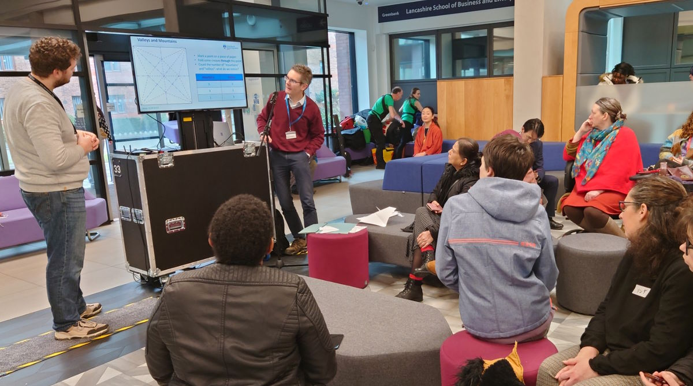
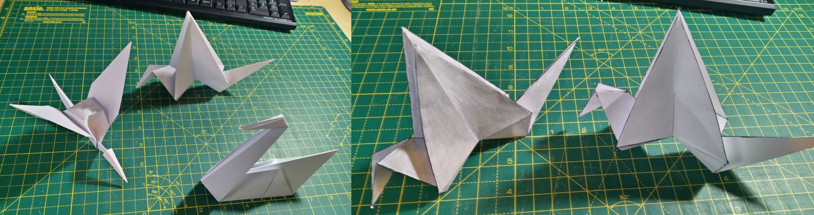

Posted on 22nd February 2023
I got roped into (okay, volunteered for) giving a talk at UClan's Japan Day on the theme of Origami. To quote Tom Lehrer, this I know from nothing. But one can learn, and I hope I said something interesting in my short talk.


There is a lot of Mathematics in Origami, and huge scope for motivating mathematics via Origami (who doesn't like the Trojan Horse approach?)
I started with Robert Lang's TED talk. Of interest here is talk about Akira Yoshizawa and the Yoshizawa–Randlett system; talk of a common language; some explicit mention of Mathematics. To me, the idea of having a systematic language which allows you to discuss an abstraction is what gets to the heart of what Mathematics is.
Then follow up with Thomas Hull's MAA talk. This is really excellent, and contains lots of ways to link Origami to Mathematics.
In the end, I spoke about how intricate modern Origami is (this seemed to be new to almost everyone in the audience), and then started talking about crease patterns.
In the small picture above, you can see this model folded up. It is surprisingly hard (or so I found) to locate all the folds to highlight them with a pen: inside folds seem to disappear from my awareness, which lead to a number of false attempts.
I then looked at counting valleys and mountains around a vertex (a la Hull's talk), spoke about flat folability and two-colouring (getting a mention of the four-colour theorem in). In the above picture, you can see that some faces are shaded. There is some satisfaction (and surprise from the audience!) to do this, then re-fold the model, and end up with a swan which is shaded on one side, and white on the other. Correctly highlighting all the folds is key to getting this trick to work!
I then mentioned Kawasaki's theorem. I then spoke about axioms, and Mathematics, before finishing with the Miura fold and applications.
I think a lot of what Hull speaks about could be adapted into a longer, interactive, outreach style session. His book Project Origami seems like an excellent source for such activities.
Finally, if you want a guide to folding some more simple models, then, of course, the internet is happy to oblige, and you just need to use your favour search engine.
(Re: my previous post: images not responsive? What rot! This was an artefact of how I locally preview posts; it works fine "in production", as it were.)